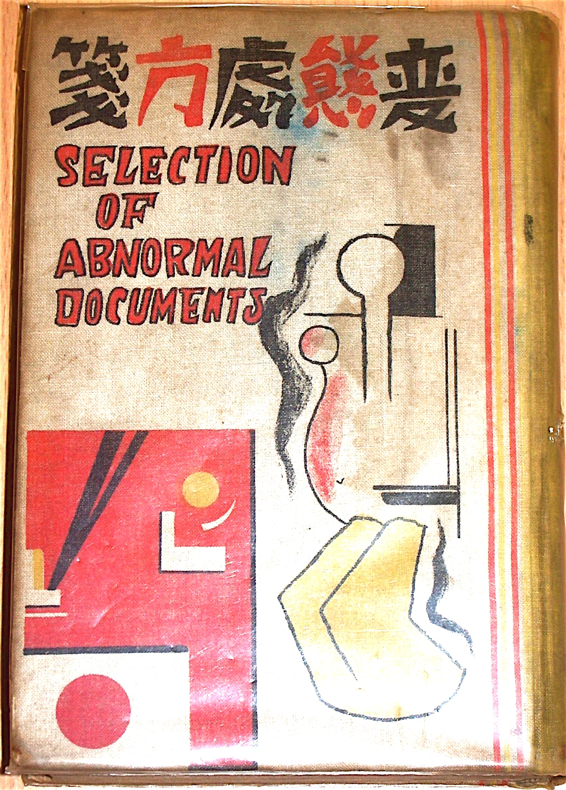

JEA
Associate Professor
Comparative Literature
Pennsylvania State University
Jonathan E. Abel

Welcome
Click the links in the menu on the top of the page or the images to navigate my website.

Welcome
Click the links in the menu on the top of the page or the images to navigate my website.
